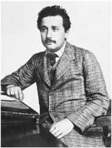

At the Patent Office, 1905
Turn of the Century
“There is nothing new to be discovered in physics now,” the revered Lord Kelvin reportedly told the British Association for the Advancement of Science in 1900. “All that remains is more and more precise measurement.”1 He was wrong.
The foundations of classical physics had been laid by Isaac Newton (1642–1727) in the late seventeenth century. Building on the discoveries of Galileo and others, he developed laws that described a very comprehensible mechanical universe: a falling apple and an orbiting moon were governed by the same rules of gravity, mass, force, and motion. Causes produced effects, forces acted upon objects, and in theory everything could be explained, determined, and predicted. As the mathematician and astronomer Laplace exulted about Newton’s universe, “An intelligence knowing all the forces acting in nature at a given instant, as well as the momentary positions of all things in the universe, would be able to comprehend in one single formula the motions of the largest bodies as well as the lightest atoms in the world; to him nothing would be uncertain, the future as well as the past would be present to his eyes.”2
Einstein admired this strict causality, calling it “the profoundest characteristic of Newton’s teaching.”3 He wryly summarized the history of physics: “In the beginning (if there was such a thing) God created Newton’s laws of motion together with the necessary masses and forces.” What especially impressed Einstein were “the achievements of mechanics in areas that apparently had nothing to do with mechanics,” such as the kinetic theory he had been exploring, which explained the behavior of gases as being caused by the actions of billions of molecules bumping around.4
In the mid-1800s, Newtonian mechanics was joined by another great advance. The English experimenter Michael Faraday (1791– 1867), the self-taught son of a blacksmith, discovered the properties of electrical and magnetic fields. He showed that an electric current produced magnetism, and then he showed that a changing magnetic field could produce an electric current. When a magnet is moved near a wire loop, or vice versa, an electric current is produced.5
Faraday’s work on electromagnetic induction permitted inventive entrepreneurs like Einstein’s father and uncle to create new ways of combining spinning wire coils and moving magnets to build electricity generators. As a result, young Albert Einstein had a profound physical feel for Faraday’s fields and not just a theoretical understanding of them.
The bushy-bearded Scottish physicist James Clerk Maxwell (1831–1879) subsequently devised wonderful equations that specified, among other things, how changing electric fields create magnetic fields and how changing magnetic fields create electrical ones. A changing electric field could, in fact, produce a changing magnetic field that could, in turn, produce a changing electric field, and so on. The result of this coupling was an electromagnetic wave.
Just as Newton had been born the year that Galileo died, so Einstein was born the year that Maxwell died, and he saw it as part of his mission to extend the work of the Scotsman. Here was a theorist who had shed prevailing biases, let mathematical melodies lead him into unknown territories, and found a harmony that was based on the beauty and simplicity of a field theory.
All of his life, Einstein was fascinated by field theories, and he described the development of the concept in a textbook he wrote with a colleague:
A new concept appeared in physics, the most important invention since Newton’s time: the field. It needed great scientific imagination to realize that it is not the charges nor the particles but the field in the space between the charges and the particles that is essential for the description of physical phenomena. The field concept proved successful when it led to the formulation of Maxwell’s equations describing the structure of the electromagnetic field.6
At first, the electromagnetic field theory developed by Maxwell seemed compatible with the mechanics of Newton. For example, Maxwell believed that electromagnetic waves, which include visible light, could be explained by classical mechanics—if we assume that the universe is suffused with some unseen, gossamer “light-bearing ether” that serves as the physical substance that undulates and oscillates to propagate the electromagnetic waves, comparable to the role water plays for ocean waves and air plays for sound waves.
By the end of the nineteenth century, however, fissures had begun to develop in the foundations of classical physics. One problem was that scientists, as hard as they tried, could not find any evidence of our motion through this supposed light-propagating ether. The study of radiation—how light and other electromagnetic waves emanate from physical bodies—exposed another problem: strange things were happening at the borderline where Newtonian theories, which described the mechanics of discrete particles, interacted with field theory, which described all electromagnetic phenomena.
Up until then, Einstein had published five little-noted papers. They had earned him neither a doctorate nor a teaching job, even at a high school. Had he given up theoretical physics at that point, the scientific community would not have noticed, and he might have moved up the ladder to become the head of the Swiss Patent Office, a job in which he would likely have been very good indeed.
There was no sign that he was about to unleash an annus mirabilis the like of which science had not seen since 1666, when Isaac Newton, holed up at his mother’s home in rural Woolsthorpe to escape the plague that was devastating Cambridge, developed calculus, an analysis of the light spectrum, and the laws of gravity.
But physics was poised to be upended again, and Einstein was poised to be the one to do it. He had the brashness needed to scrub away the layers of conventional wisdom that were obscuring the cracks in the foundation of physics, and his visual imagination allowed him to make conceptual leaps that eluded more traditional thinkers.
The breakthroughs that he wrought during a four-month frenzy from March to June 1905 were heralded in what would become one of the most famous personal letters in the history of science. Conrad Habicht, his fellow philosophical frolicker in the Olympia Academy, had just moved away from Bern, which, happily for historians, gave a reason for Einstein to write to him in late May.
Dear Habicht,
Such a solemn air of silence has descended between us that I almost feel as if I am committing a sacrilege when I break it now with some inconsequential babble . . .
So, what are you up to, you frozen whale, you smoked, dried, canned piece of soul ...? Why have you still not sent me your dissertation? Don’t you know that I am one of the 1½ fellows who would read it with interest and pleasure, you wretched man? I promise you four papers in return. The first deals with radiation and the energy properties of light and is very revolutionary, as you will see if you send me your work first. The second paper is a determination of the true sizes of atoms ... The third proves that bodies on the order of magnitude 1/1000 mm, suspended in liquids, must already perform an observable random motion that is produced by thermal motion. Such movement of suspended bodies has actually been observed by physiologists who call it Brownian molecular motion. The fourth paper is only a rough draft at this point, and is an electrodynamics of moving bodies which employs a modification of the theory of space and time.7
Light Quanta, March 1905
As Einstein noted to Habicht, it was the first of these 1905 papers, not the famous final one expounding a theory of relativity, that deserved the designation “revolutionary.” Indeed, it may contain the most revolutionary development in the history of physics. Its suggestion that light comes not just in waves but in tiny packets—quanta of light that were later dubbed “photons”—spirits us into strange scientific mists that are far murkier, indeed more spooky, than even the weirdest aspects of the theory of relativity.
Einstein recognized this in the slightly odd title he gave to the paper, which he submitted on March 17, 1905, to the Annalen der Physik: “On a Heuristic Point of View Concerning the Production and Transformation of Light.”8 Heuristic? It means a hypothesis that serves as a guide and gives direction in solving a problem but is not considered proven. From this first sentence he ever published about quantum theory until his last such sentence, which came in a paper exactly fifty years later, just before he died, Einstein regarded the concept of the quanta and all of its unsettling implications as heuristic at best: provisional and incomplete and not fully compatible with his own intimations of underlying reality.
At the heart of Einstein’s paper were questions that were bedeviling physics at the turn of the century, and in fact have done so from the time of the ancient Greeks until today: Is the universe made up of particles, such as atoms and electrons? Or is it an unbroken continuum, as a gravitational or electromagnetic field seems to be? And if both methods of describing things are valid at times, what happens when they intersect?
Since the 1860s, scientists had been exploring just such a point of intersection by analyzing what was called “blackbody radiation.” As anyone who has played with a kiln or a gas burner knows, the glow from a material such as iron changes color as it heats up. First it appears to radiate mainly red light; as it gets hotter, it glows more orange, and then white and then blue. To study this radiation, Gustav Kirchhoff and others devised a closed metal container with a tiny hole to let a little light escape. Then they drew a graph of the intensity of each wavelength when the device reached equilibrium at a certain temperature. No matter what the material or shape of the container’s walls, the results were the same; the shape of the graphs depended only on the temperature.
There was, alas, a problem. No one could fully account for the basis of the mathematical formula that would produce the hill-like shape of these graphs.
When Kirchhoff died, his professorship at the University of Berlin was given to Max Planck. Born in 1858 into an ancient German family of great scholars, theologians, and lawyers, Planck was many things that Einstein was not: with his pince-nez glasses and meticulous dress, he was very proudly German, somewhat shy, steely in his resolve, conservative by instinct, and formal in his manner. “It is difficult to imagine two men of more different attitudes,” their mutual friend Max Born later said. “Einstein a citizen of the whole world, little attached to the people around him, independent of the emotional background of the society in which he lived—Planck deeply rooted in the traditions of his family and nation, an ardent patriot, proud of the greatness of German history and consciously Prussian in his attitude to the state.”9
His conservatism made Planck skeptical about the atom, and of particle (rather than wave and continuous field) theories in general. As he wrote in 1882, “Despite the great success that the atomic theory has so far enjoyed, ultimately it will have to be abandoned in favor of the assumption of continuous matter.” In one of our planet’s little ironies, Planck and Einstein would share the fate of laying the groundwork for quantum mechanics, and then both would flinch when it became clear that it undermined the concepts of strict causality and certainty they both worshipped.10
In 1900, Planck came up with an equation, partly using what he called “a fortuitous guess,” that described the curve of radiation wavelengths at each temperature. In doing so he accepted that Boltzmann’s statistical methods, which he had resisted, were correct after all. But the equation had an odd feature: it required the use of a constant, which was an unexplained tiny quantity (approximately 6.62607 x 10–34 joule-seconds), that needed to be included for it to come out right. It was soon dubbed Planck’s constant, h, and is now known as one of the fundamental constants of nature.
At first Planck had no idea what, if any, physical meaning this mathematical constant had. But then he came up with a theory that, he thought, applied not to the nature of light itself but to the action that occurred when the light was absorbed or emitted by a piece of matter. He posited that the surface of anything that was radiating heat and light—such as the walls in a blackbody device—contained “vibrating molecules” or “harmonic oscillators,” like little vibrating springs.11 These harmonic oscillators could absorb or emit energy only in the form of discrete packets or bundles. These packets or bundles of energy came only in fixed amounts, determined by Planck’s constant, rather than being divisible or having a continuous range of values.
Planck considered his constant a mere calculational contrivance that explained the process of emitting or absorbing light but did not apply to the fundamental nature of light itself. Nevertheless, the declaration he made to the Berlin Physical Society in December 1900 was momentous: “We therefore regard—and this is the most essential point of the entire calculation—energy to be composed of a very definite number of equal finite packages.”12
Einstein quickly realized that quantum theory could undermine classical physics. “All of this was quite clear to me shortly after the appearance of Planck’s fundamental work,” he wrote later. “All of my attempts to adapt the theoretical foundation of physics to this knowledge failed completely. It was as if the ground had been pulled out from under us, with no firm foundation to be seen anywhere.”13
In addition to the problem of explaining what Planck’s constant was really all about, there was another curiosity about radiation that needed to be explained. It was called the photoelectric effect, and it occurs when light shining on a metal surface causes electrons to be knocked loose and emitted. In the letter he wrote to Mari right after he learned of her pregnancy in May 1901, Einstein enthused over a “beautiful piece” by Philipp Lenard that explored this topic.
right after he learned of her pregnancy in May 1901, Einstein enthused over a “beautiful piece” by Philipp Lenard that explored this topic.
Lenard’s experiments found something unexpected. When he increased the frequency of the light—moving from infrared heat and red light up in frequency to violet and ultraviolet—the emitted electrons sped out with much more energy. Then, he increased the intensity of the light by using a carbon arc light that could be made brighter by a factor of 1,000. The brighter, more intense light had a lot more energy, so it seemed logical that the electrons emitted would have more energy and speed away faster. But that did not occur. More intense light produced more electrons, but the energy of each remained the same. This was something that the wave theory of light did not explain.
Einstein had been pondering the work of Planck and Lenard for four years. In his final paper of 1904, “On the General Molecular Theory of Heat,” he discussed how the average energy of a system of molecules fluctuates. He then applied this to a volume filled with radiation, and found that experimental results were comparable. His concluding phrase was, “I believe that this agreement must not be ascribed to chance.”14 As he wrote to his friend Conrad Habicht just after finishing that 1904 paper, “I have now found in a most simple way the relation between the size of elementary quanta of matter and the wavelengths of radiation.” He was thus primed, so it seems, to form a theory that the radiation field was made up of quanta.15
In his 1905 light quanta paper, published a year later, he did just that. He took the mathematical quirk that Planck had discovered, interpreted it literally, related it to Lenard’s photoelectric results, and analyzed light as if it really was made up of pointlike particles—light quanta, he called them—rather than being a continuous wave.
Einstein began his paper by describing the great distinction between theories based on particles (such as the kinetic theory of gases) and theories that involve continuous functions (such as the electromagnetic fields of the wave theory of light). “There exists a profound formal difference between the theories that physicists have formed about gases and other ponderable bodies, and Maxwell’s theory of electromagnetic processes in so-called empty space,” he noted. “While we consider the state of a body to be completely determined by the positions and velocities of a very large, yet finite, number of atoms and electrons, we make use of continuous spatial functions to describe the electromagnetic state of a given volume.”16
Before he made his case for a particle theory of light, he emphasized that this would not make it necessary to scrap the wave theory, which would continue to be useful as well. “The wave theory of light, which operates with continuous spatial functions, has worked well in the representation of purely optical phenomena and will probably never be replaced by another theory.”
His way of accommodating both a wave theory and a particle theory was to suggest, in a “heuristic” way, that our observation of waves involve statistical averages of the positions of what could be countless particles. “It should be kept in mind,” he said, “that the optical observations refer to time averages rather than instantaneous values.”
Then came what may be the most revolutionary sentence that Einstein ever wrote. It suggests that light is made up of discrete particles or packets of energy: “According to the assumption to be considered here, when a light ray is propagated from a point, the energy is not continuously distributed over an increasing space but consists of a finite number of energy quanta which are localized at points in space and which can be produced and absorbed only as complete units.”
Einstein explored this hypothesis by determining whether a volume of blackbody radiation, which he was now assuming consisted of discrete quanta, might in fact behave like a volume of gas, which he knew consisted of discrete particles. First, he looked at the formulas that showed how the entropy of a gas changes when its volume changes. Then he compared this to how the entropy of blackbody radiation changes as its volume changes. He found that the entropy of the radiation “varies with volume according to the same law as the entropy of an ideal gas.”
He did a calculation using Boltzmann’s statistical formulas for entropy. The statistical mechanics that described a dilute gas of particles was mathematically the same as that for blackbody radiation. This led Einstein to declare that the radiation “behaves thermodynamically as if it consisted of mutually independent energy quanta.” It also provided a way to calculate the energy of a “particle” of light at a particular frequency, which turned out to be in accord with what Planck had found.17
Einstein went on to show how the existence of these light quanta could explain what he graciously called Lenard’s “pioneering work” on the photoelectric effect. If light came in discrete quanta, then the energy of each one was determined simply by the frequency of the light multiplied by Planck’s constant. If we assume, Einstein suggested, “that a light quantum transfers its entire energy to a single electron,” then it follows that light of a higher frequency would cause the electrons to emit with more energy. On the other hand, increasing the intensity of the light (but not the frequency) would simply mean that more electrons would be emitted, but the energy of each would be the same.
That was precisely what Lenard had found. With a trace of humility or tentativeness, along with a desire to show that his conclusions had been deduced theoretically rather than induced entirely from experimental data, Einstein declared of his paper’s premise that light consists of tiny quanta: “As far as I can see, our conception does not conflict with the properties of the photoelectric effect observed by Mr. Lenard.”
By blowing on Planck’s embers, Einstein had turned them into a flame that would consume classical physics. What precisely did Einstein produce that made his 1905 paper a discontinuous—one is tempted to say quantum—leap beyond the work of Planck?
In effect, as Einstein noted in a paper the following year, his role was that he figured out the physical significance of what Planck had discovered.18 For Planck, a reluctant revolutionary, the quantum was a mathematical contrivance that explained how energy was emitted and absorbed when it interacted with matter. But he did not see that it related to a physical reality that was inherent in the nature of light and the electromagnetic field itself. “One can interpret Planck’s 1900 paper to mean only that the quantum hypothesis is used as a mathematical convenience introduced in order to calculate a statistical distribution, not as a new physical assumption,” write science historians Gerald Holton and Steven Brush.19
Einstein, on the other hand, considered the light quantum to be a feature of reality: a perplexing, pesky, mysterious, and sometimes maddening quirk in the cosmos. For him, these quanta of energy (which in 1926 were named photons)20 existed even when light was moving through a vacuum. “We wish to show that Mr. Planck’s determination of the elementary quanta is to some extent independent of his theory of blackbody radiation,” he wrote. In other words, Einstein argued that the particulate nature of light was a property of the light itself and not just some description of how the light interacts with matter.21
Even after Einstein published his paper, Planck did not accept his leap. Two years later, Planck warned the young patent clerk that he had gone too far, and that quanta described a process that occurred during emission or absorption, rather than some real property of radiation in a vacuum. “I do not seek the meaning of the ‘quantum of action’ (light quantum) in the vacuum but at the site of absorption and emission,” he advised.22
Planck’s resistance to believing that the light quanta had a physical reality persisted. Eight years after Einstein’s paper was published, Planck proposed him for a coveted seat in the Prussian Academy of Sciences. The letter he and other supporters wrote was filled with praise, but Planck added: “That he might sometimes have overshot the target in his speculations, as for example in his light quantum hypothesis, should not be counted against him too much.”23
Just before he died, Planck reflected on the fact that he had long recoiled from the implications of his discovery. “My futile attempts to fit the elementary quantum of action somehow into classical theory continued for a number of years and cost me a great deal of effort,” he wrote. “Many of my colleagues saw in this something bordering on a tragedy.”
Ironically, similar words would later be used to describe Einstein. He became increasingly “aloof and skeptical” about the quantum discoveries he pioneered, Born said of Einstein. “Many of us regard this as a tragedy.”24
Einstein’s theory produced a law of the photoelectric effect that was experimentally testable: the energy of emitted electrons would depend on the frequency of the light according to a simple mathematical formula involving Planck’s constant. The formula was subsequently shown to be correct. The physicist who did the crucial experiment was Robert Millikan, who would later head the California Institute of Technology and try to recruit Einstein.
Yet even after he verified Einstein’s photoelectric formulas, Millikan still rejected the theory. “Despite the apparently complete success of the Einstein equation,” he declared, “the physical theory on which it was designed to be the symbolic expression is found so untenable that Einstein himself, I believe, no longer holds to it.”25
Millikan was wrong to say that Einstein’s formulation of the photo-electric effect had been abandoned. In fact, it was specifically for discovering the law of the photoelectric effect that Einstein would win his only Nobel Prize. With the advent of quantum mechanics in the 1920s, the reality of the photon became a fundamental part of physics.
However, on the larger point Millikan was right. Einstein would increasingly find the eerie implications of the quantum—and of the wave-particle duality of light—to be deeply unsettling. In a letter he wrote near the end of his life to his dear friend Michele Besso, after quantum mechanics had been accepted by almost every living physicist, Einstein would lament, “All these fifty years of pondering have not brought me any closer to answering the question, What are light quanta?”26
Doctoral Dissertation on the Size of Molecules, April 1905
Einstein had written a paper that would revolutionize science, but he had not yet been able to earn a doctorate. So he tried one more time to get a dissertation accepted.
He realized that he needed a safe topic, not a radical one like quanta or relativity, so he chose the second paper he was working on, titled “A New Determination of Molecular Dimensions,” which he completed on April 30 and submitted to the University of Zurich in July.27
Perhaps out of caution and deference to the conservative approach of his adviser, Alfred Kleiner, he generally avoided the innovative statistical physics featured in his previous papers (and in his Brownian motion paper completed eleven days later) and relied instead mainly on classical hydrodynamics.28 Yet he was still able to explore how the behavior of countless tiny particles (atoms, molecules) are reflected in observable phenomena, and conversely how observable phenomena can tell us about the nature of those tiny unseen particles.
Almost a century earlier, the Italian scientist Amedeo Avogadro (1776–1856) had developed the hypothesis—correct, as it turned out—that equal volumes of any gas, when measured at the same temperature and pressure, will have the same number of molecules. That led to a difficult quest: figuring out just how many this was.
The volume usually chosen is that occupied by a mole of the gas (its molecular weight in grams), which is 22.4 liters at standard temperature and pressure. The number of molecules under such conditions later became known as Avogadro’s number. Determining it precisely was, and still is, rather difficult. A current estimate is approximately 6.02214 x 1023. (This is a big number: that many unpopped popcorn kernels when spread across the United States would cover the country nine miles deep.)29
Most previous measurements of molecules had been done by studying gases. But as Einstein noted in the first sentence of his paper, “The physical phenomena observed in liquids have thus far not served for the determination of molecular sizes.” In this dissertation (after a few math and data corrections were later made), Einstein was the first person able to get a respectable result using liquids.
His method involved making use of data about viscosity, which is how much resistance a liquid offers to an object that tries to move through it. Tar and molasses, for example, are highly viscous. If you dissolve sugar in water, the solution’s viscosity increases as it gets more syrupy. Einstein envisioned the sugar molecules gradually diffusing their way through the smaller water molecules. He was able to come up with two equations, each containing the two unknown variables—the size of the sugar molecules and the number of them in the water—that he was trying to determine. He could then solve for these unknown variables. Doing so, he got a result for Avogadro’s number that was 2.1 x 1023.
That, unfortunately, was not very close. When he submitted his paper to the Annalen der Physik in August, right after it had been accepted by Zurich University, the editor Paul Drude (who was blissfully unaware of Einstein’s earlier desire to ridicule him) held up its publication because he knew of some better data on the properties of sugar solutions. Using this new data, Einstein came up with a result that was closer to correct: 4.15 x 1023.
A few years later, a French student tested the approach experimentally and discovered something amiss. So Einstein asked an assistant in Zurich to look at it all over again. He found a minor error, which when corrected produced a result of 6.56 x 1023, which ended up being quite respectable.30
Einstein later said, perhaps half-jokingly, that when he submitted his thesis, Professor Kleiner rejected it for being too short, so he added one more sentence and it was promptly accepted. There is no documentary evidence for this.31 Either way, his thesis actually became one of his most cited and practically useful papers, with applications in such diverse fields as cement mixing, dairy production, and aerosol products. And even though it did not help him get an academic job, it did make it possible for him to become known, finally, as Dr. Einstein.
Brownian Motion, May 1905
Eleven days after finishing his dissertation, Einstein produced another paper exploring evidence of things unseen. As he had been doing since 1901, he relied on statistical analysis of the random actions of invisible particles to show how they were reflected in the visible world.
In doing so, Einstein explained a phenomenon, known as Brownian motion, that had been puzzling scientists for almost eighty years: why small particles suspended in a liquid such as water are observed to jiggle around. And as a byproduct, he pretty much settled once and for all that atoms and molecules actually existed as physical objects.
Brownian motion was named after the Scottish botanist Robert Brown, who in 1828 had published detailed observations about how minuscule pollen particles suspended in water can be seen to wiggle and wander when examined under a strong microscope. The study was replicated with other particles, including filings from the Sphinx, and a variety of explanations was offered. Perhaps it had something to do with tiny water currents or the effect of light. But none of these theories proved plausible.
With the rise in the 1870s of the kinetic theory, which used the random motions of molecules to explain things like the behavior of gases, some tried to use it to explain Brownian motion. But because the suspended particles were 10,000 times larger than a water molecule, it seemed that a molecule would not have the power to budge the particle any more than a baseball could budge an object that was a half-mile in diameter.32
Einstein showed that even though one collision could not budge a particle, the effect of millions of random collisions per second could explain the jig observed by Brown. “In this paper,” he announced in his first sentence, “it will be shown that, according to the molecular-kinetic theory of heat, bodies of a microscopically visible size suspended in liquids must, as a result of thermal molecular motions, perform motions of such magnitudes that they can be easily observed with a microscope.”33
He went on to say something that seems, on the surface, somewhat puzzling: his paper was not an attempt to explain the observations of Brownian motion. Indeed, he acted as if he wasn’t even sure that the motions he deduced from his theory were the same as those observed by Brown: “It is possible that the motions to be discussed here are identical with so-called Brownian molecular motion; however, the data available to me on the latter are so imprecise that I could not form a judgment on the question.” Later, he distanced his work even further from intending to be an explanation of Brownian motion: “I discovered that, according to atomistic theory, there would have to be a movement of suspended microscopic particles open to observations, without knowing that observations concerning the Brownian motion were already long familiar.”34
At first glance his demurral that he was dealing with Brownian motion seems odd, even disingenuous. After all, he had written Conrad Habicht a few months earlier, “Such movement of suspended bodies has actually been observed by physiologists who call it Brownian molecular motion.” Yet Einstein’s point was both true and significant: his paper did not start with the observed facts of Brownian motion and build toward an explanation of it. Rather, it was a continuation of his earlier statistical analysis of how the actions of molecules could be manifest in the visible world.
In other words, Einstein wanted to assert that he had produced a theory that was deduced from grand principles and postulates, not a theory that was constructed by examining physical data (just as he had made plain that his light quanta paper had not started with the photo-electric effect data gathered by Philipp Lenard). It was a distinction he would also make, as we shall soon see, when insisting that his theory of relativity did not derive merely from trying to explain experimental results about the speed of light and the ether.
Einstein realized that a bump from a single water molecule would not cause a suspended pollen particle to move enough to be visible. However, at any given moment, the particle was being hit from all sides by thousands of molecules. There would be some moments when a lot more bumps happened to hit one particular side of the particle. Then, in another moment, a different side might get the heaviest barrage.
The result would be random little lurches that would result in what is known as a random walk. The best way for us to envision this is to imagine a drunk who starts at a lamppost and lurches one step in a random direction every second. After two such lurches he may have gone back and forth to return to the lamp. Or he may be two steps away in the same direction. Or he may be one step west and one step northeast. A little mathematical plotting and charting reveals an interesting thing about such a random walk: statistically, the drunk’s distance from the lamp will be proportional to the square root of the number of seconds that have elapsed.35
Einstein realized that it was neither possible nor necessary to measure each zig and zag of Brownian motion, nor to measure the particle’s velocity at any moment. But it was rather easy to measure the total distances of randomly lurching particles as these distances grew over time.
Einstein wanted concrete predictions that could be tested, so he used both his theoretical knowledge and experimental data about viscosity and diffusion rates to come up with precise predictions showing the distance a particle should move depending on its size and the temperature of the liquid. For example, he predicted, in the case of a particle with a diameter of one thousandth of a millimeter in water at 17 degrees centigrade, “the mean displacement in one minute would be about 6 microns.”
Here was something that could actually be tested, and with great consequence. “If the motion discussed here can be observed,” he wrote, “then classical thermodynamics can no longer be viewed as strictly valid.” Better at theorizing than at conducting experiments, Einstein ended his paper with a charming exhortation: “Let us hope that a researcher will soon succeed in solving the problem presented here, which is so important for the theory of heat.”
Within months, a German experimenter named Henry Seidentopf, using a powerful microscope, confirmed Einstein’s predictions. For all practical purposes, the physical reality of atoms and molecules was now conclusively proven. “At the time atoms and molecules were still far from being regarded as real,” the theoretical physicist Max Born later recalled. “I think that these investigations of Einstein have done more than any other work to convince physicists of the reality of atoms and molecules.”36
As lagniappe, Einstein’s paper also provided yet another way to determine Avogadro’s number. “It bristles with new ideas,” Abraham Pais said of the paper. “The final conclusion, that Avogadro’s number can essentially be determined from observations with an ordinary microscope, never fails to cause a moment of astonishment even if one has read the paper before and therefore knows the punch line.”
A strength of Einstein’s mind was that it could juggle a variety of ideas simultaneously. Even as he was pondering dancing particles in a liquid, he had been wrestling with a different theory that involved moving bodies and the speed of light. A day or so after sending in his Brownian motion paper, he was talking to his friend Michele Besso when a new brainstorm struck. It would produce, as he wrote Habicht in his famous letter of that month, “a modification of the theory of space and time.”